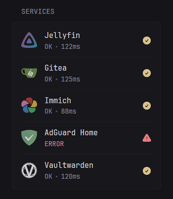
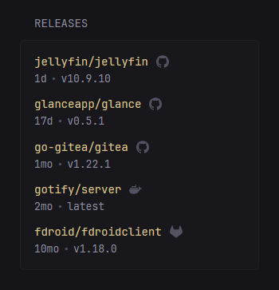

Monitor & Releases
Monitor
Display a list of sites and whether they are reachable (online) or not. This is determined by sending a GET request to the specified URL, if the response is 200 then the site is OK. The time it took to receive a response is also shown in milliseconds.
Example:
- type: monitor
cache: 1m
title: Services
sites:
- title: Jellyfin
url: https://jellyfin.yourdomain.com
icon: /assets/jellyfin-logo.png
- title: Gitea
url: https://gitea.yourdomain.com
icon: /assets/gitea-logo.png
- title: Immich
url: https://immich.yourdomain.com
icon: /assets/immich-logo.png
- title: AdGuard Home
url: https://adguard.yourdomain.com
icon: /assets/adguard-logo.png
- title: Vaultwarden
url: https://vault.yourdomain.com
icon: /assets/vaultwarden-logo.png
Preview:

You can hover over the "ERROR" text to view more information.
Properties
| Name | Type | Required | Default |
|---|---|---|---|
| sites | array | yes | |
| style | string | no | |
| show-failing-only | boolean | no | false |
show-failing-only
Shows only a list of failing sites when set to true.
style
Used to change the appearance of the widget. Possible values are compact.
Preview of compact:

sites
Properties for each site:
| Name | Type | Required | Default |
|---|---|---|---|
| title | string | yes | |
| url | string | yes | |
| check-url | string | no | |
| error-url | string | no | |
| icon | string | no | |
| timeout | string | no | 3s |
| allow-insecure | boolean | no | false |
| same-tab | boolean | no | false |
| alt-status-codes | array | no | |
| basic-auth | object | no |
title
The title used to indicate the site.
url
The URL of the monitored service, which must be reachable by Glance, and will be used as the link to go to when clicking on the title. If check-url is not specified, this is used as the status check.
check-url
The URL which will be requested and its response will determine the status of the site. If not specified, the url property is used.
error-url
If the monitored service returns an error, the user will be redirected here. If not specified, the url property is used.
icon
See Icons for more information on how to specify icons.
timeout
How long to wait for a response from the server before considering it unreachable. The value is a string and must be a number followed by one of s, m, h, d. Example: 5s for 5 seconds, 1m for 1 minute, etc.
allow-insecure
Whether to ignore invalid/self-signed certificates.
same-tab
Whether to open the link in the same or a new tab.
alt-status-codes
Status codes other than 200 that you want to return "OK".
alt-status-codes:
- 403
basic-auth
HTTP Basic Authentication credentials for protected sites.
basic-auth:
username: your-username
password: your-password
Releases
Display a list of latest releases for specific repositories on Github, GitLab, Codeberg or Docker Hub.
Example:
- type: releases
show-source-icon: true
repositories:
- go-gitea/gitea
- jellyfin/jellyfin
- glanceapp/glance
- codeberg:redict/redict
- gitlab:fdroid/fdroidclient
- dockerhub:gotify/server
Preview:

Properties
| Name | Type | Required | Default |
|---|---|---|---|
| repositories | array | yes | |
| show-source-icon | boolean | no | false |
| token | string | no | |
| gitlab-token | string | no | |
| limit | integer | no | 10 |
| collapse-after | integer | no | 5 |
repositories
A list of repositores to fetch the latest release for. Only the name/repo is required, not the full URL. A prefix can be specified for repositories hosted elsewhere such as GitLab, Codeberg and Docker Hub. Example:
repositories:
- gitlab:inkscape/inkscape
- dockerhub:glanceapp/glance
- codeberg:redict/redict
Official images on Docker Hub can be specified by omitting the owner:
repositories:
- dockerhub:nginx
- dockerhub:node
- dockerhub:alpine
You can also specify exact tags for Docker Hub images:
repositories:
- dockerhub:nginx:latest
- dockerhub:nginx:stable-alpine
To include prereleases you can specify the repository as an object and use the include-prereleases property:
Note: This feature is currently only available for GitHub repositories.
repositories:
- gitlab:inkscape/inkscape
- repository: glanceapp/glance
include-prereleases: true
- codeberg:redict/redict
show-source-icon
Shows an icon of the source (GitHub/GitLab/Codeberg/Docker Hub) next to the repository name when set to true.
token
Without authentication Github allows for up to 60 requests per hour. You can easily exceed this limit and start seeing errors if you're tracking lots of repositories or your cache time is low. To circumvent this you can create a read only token from your Github account and provide it here.
You can also specify the value for this token through an ENV variable using the syntax ${GITHUB_TOKEN} where GITHUB_TOKEN is the name of the variable that holds the token. If you've installed Glance through docker you can specify the token in your docker-compose:
services:
glance:
image: glanceapp/glance
environment:
- GITHUB_TOKEN=<your token>
and then use it in your glance.yml like this:
- type: releases
token: ${GITHUB_TOKEN}
repositories: ...
This way you can safely check your glance.yml in version control without exposing the token.
gitlab-token
Same as the above but used when fetching GitLab releases.
limit
The maximum number of releases to show.
collapse-after
How many releases are visible before the "SHOW MORE" button appears. Set to -1 to never collapse.